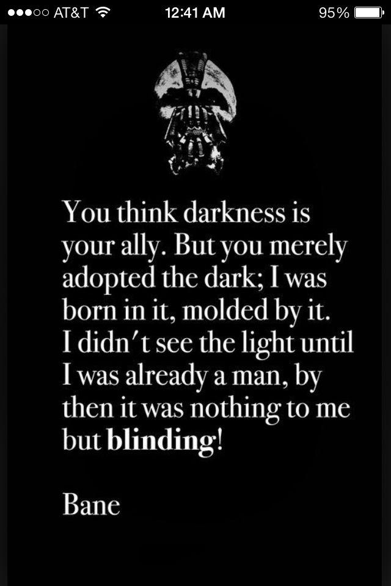

Chapter 1 INTRO TO THIS BOOK

So you want to learn R? Now, programming is not easy. It is also not so hard.. What the hell is this guy on about? You will understand some concepts very easily and some concepts will be harder to grasp. Sometimes, some new concepts will be built on previous ones you learned, so it is important to always pay attention to detail and keep an open mind.
You will be face a lot of errors, your code won’t work, at other times even ChatGPT will not be able to give you good solutions to copy and paste, you will want to punch your screen at times, other times maybe just your keyboard or other times you might just want to throw your laptop away,
Jeez, man, alright if this is something you are completely interested in, let me give you the good news now. There is no feeling better than writing a program that works as intended and runs perfectly. You feel like THAT GUY! You run your code and look at that imaginary video camera in the corner of your room like prime Michael Scott ad´nd feel wow I really am that good?

When you’re a developer, on some days, you’re gonna feel like a genius, other days you’re gonna feel like a complete idiot that doesn’t know jack-[redacted].
Anyone can learn to code, you can learn how to write lines of code for long enough and convince yourself and/or if you’re like me everyone else that you are good. The point of coding is to be able to use your code to solve actual problems. The very little concepts you learn, how do you intimately understand them, how do you assemble, like LEGO pieces, bits and lines of code to build functional programs. Programs that do actual stuff. That is the point of being a developer: building things. You do not want to be like Tottenham Hotspur and always build stuff but never actually know how to wIn StUfF… sorry, have a point for building what you build.
At this point I would personally advise you, yeah, no, seriously that this journey of learning how to code will be fun, it will be ugly; for some code challenges, you will be staring at your screen at 4 AM wondering if it is worth it.
“Jeff??? Are you convincing me to code or not?” Don’t worry I am trying to make sure you understand that, this is no easy path to tread and if you start learning to code half-heartedly, you most likely are not going to make it eventually. I am not kidding when I say you need to try to read or write code for 30 minutes to an hour at least everyday or if you’re like me and enjoy the weekend away from electronic devices, during the weekdays.
1.1 CODING? WHAT IS IT
Simple, coding is the art of writing instructions in a programming language to build something called a program. There are so many programming languages out there: C, JavaScript, Rust, Java, HTML, CSS, PHP, SQL, etc.
You will notice we left one popular programming language out: Python. Honestly if you ever make it to the end of this course, one of the requirements is for you to be a full time Python hater and troll people online for saying it is better than R! Don’t do that seriously lol… Python is another versatile programming language which is popular for it’s equally readable syntax and ease to learn. But in terms of statistical computing and/or programming, if you ask the old gods and the new, they will tell you R is way better.
Back to coding now. You notice how we talked about coding being the art of writing instructions that will be executed by a computer to create a program or an application? That is the point of coding, so the programming language converts your code into instructions your computer can understand and your computer processes your code for you building the program you wrote code for. Computers understand only binary language to process your code, in layman’s terms as Joey Tribbianni would say: goo-goo-gaga!
Binary is just 1s and 0s and each programming language you learn compiles your code into machine readable code that allows the computer to run it and give you a program. No kidding computers are fast, no, like really fast and unlike you who is unprepared to do a monotonous task continuously for even 10 minutes, a computer can do that for longer without complaining. They can perform complex calculations, store huge amounts of data, perform repetitive tasks, something you and I cannot keep up.
1.2 What does a programmer do?
Because I do not want to get cancelled, as it’s an ick for my crush, I will not start a war on specifying what and who these categories are and the inevitable question of which is better(I cannot say that it is developer).
If you are going to code, especially if you are starting out, you are going to be building a lot of things from scratch. You are going to put together lines of code here and there to build programs. You are also going to actually test those programs to see if they actually run well and in the inevitable scenario that your code fails to do what you built it to do, you are going to become a code doctor(wow, that might be a good username) and perform the most dreaded task of programming, the part where the mighty tremble and fail the part where you scan through lines and do not see where the problem is: DEBUGGING.
You’re probably going to do more debugging as you go farther in your programming journey. Initially, you’re going to be doing a lot of building and testing and then when parts of your code do not work, you’re going to have to debug. Simply put, debugging is the process of finding and resolving errors or if you’re cool, finding and removing or resolving bugs in your code. Now we’re not going to be getting rid of bugs with insecticide as we do not want to get cancelled by the wonderful insect-rights community, so removing bugs is just fixing your code to work in an expected way.
It happens to even me but most of the tie, bugs are inevitable, your code works today or a line or few lines of code you stole from StackOverflow worked perfectly but you fire up your computer the next day and you get an error everytime you run your code again.
You start panicking, you tried to fix it how best you thought could be fixed but it’s still not working. Well first of all, be me because contrary to popular belief, I do not actually know what a sTaCkOvEfLoW is…
To be honest debugging is an art. You will need to understand errors. In this course, we will take the counter intuitive approach. Instead of fearing errors and panicking when your code does not work, you will be invigorated whenever your code throws up an error. You dear madam or kind sir will become the bane of errors.

Nothing dramatic, but one of the big aims of this course is to make you comfortable with errors. Errors are simply ways of telling you the logic in your code is flawed and they test your knowledge of concepts and also your application/implementation of that concept in your code. The good thing you will find is, with time you will become a better programmer over time because of the mistakes you have made in the past. This course will oddly encourage you to make mistakes as they help you consolidate what ever loose piece of knowledge you have in your head.
Now we will move on to the next chapter where we talk more about R and R programming and its importance and why we are going to learn it.